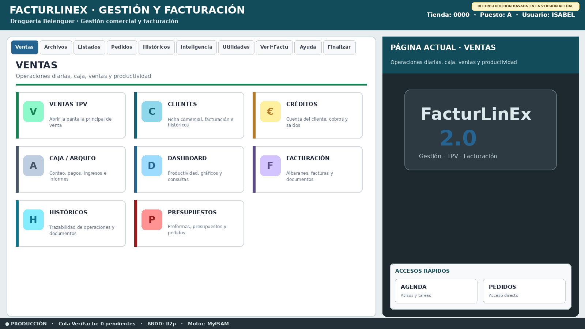
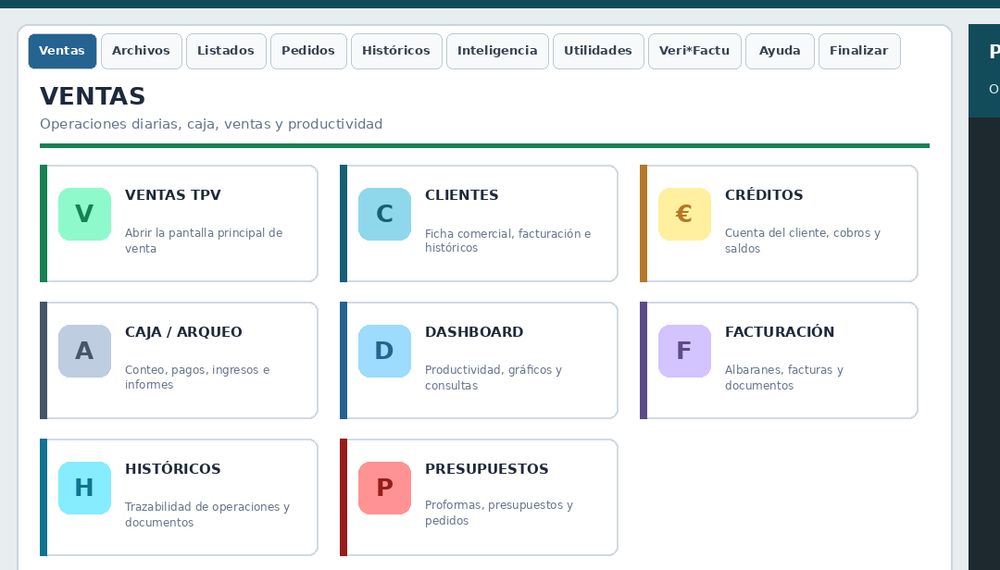
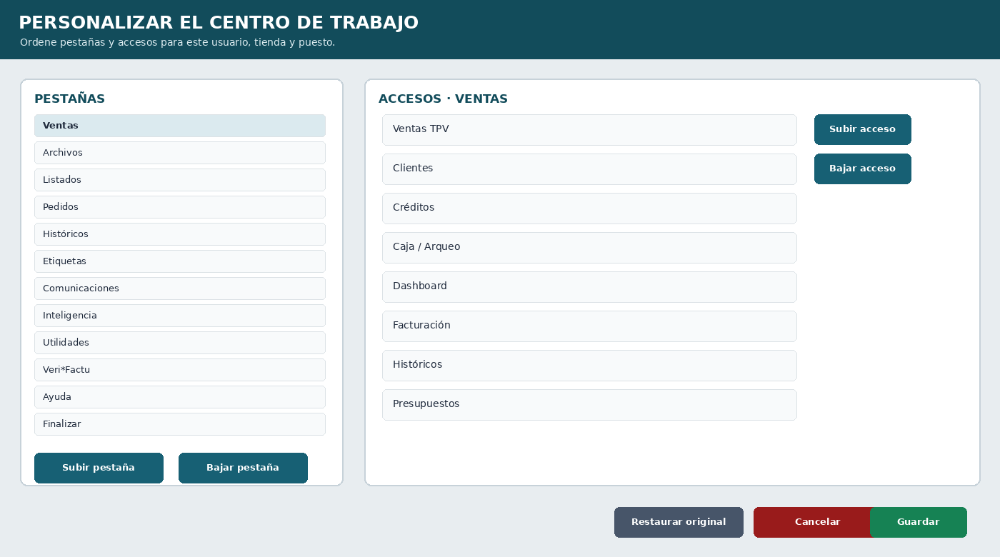

Primeros pasos y navegación
Primera edición 1.0 FINAL · Manual completo y auditado
1.1 Qué es FacturLinEx #
FacturLinEx es una solución de gestión comercial, TPV y facturación orientada al trabajo diario con clientes, artículos, ventas, compras, existencias, caja, informes y obligaciones fiscales. Está diseñada para funcionar en entornos Linux con base de datos MariaDB y puede adaptarse a varias tiendas, puestos y series documentales.
La filosofía de trabajo del programa combina rapidez en el mostrador, trazabilidad de los documentos, posibilidad de uso por teclado, ratón o pantalla táctil y acceso a herramientas de mantenimiento y análisis.
1.2 Conceptos básicos #
| Concepto | Descripción |
|---|---|
| Empresa | Entidad cuyos datos fiscales, comerciales y de impresión utiliza el programa. |
| Tienda | Centro o ubicación lógica. Determina tablas, configuraciones y numeraciones asociadas. |
| Puesto | Terminal de venta identificado normalmente por una letra: A, B, C, etc. |
| Usuario | Persona que accede y realiza operaciones. Puede quedar registrada en ventas y procesos. |
| Serie | Prefijo o código que identifica una secuencia documental. |
| Ticket simplificado | Documento de venta simplificado, normalmente asociado a series FS-. |
| Albarán | Documento de entrega pendiente de facturación o tratamiento posterior. |
| Factura | Documento fiscal completo asociado a una serie y número. |
| Rectificativa | Documento que corrige o anula total o parcialmente otro documento. |
1.3 Menú principal #
El menú principal moderno funciona como un centro de trabajo. La cabecera identifica FacturLinEx y el contexto activo; las pestañas agrupan las áreas; los módulos se presentan como tarjetas con título y ayuda; y el panel lateral conserva la identidad visual y los accesos rápidos.

1.3.1 Zonas del menú moderno #
| Zona | Contenido y uso |
|---|---|
| Cabecera y contexto | Nombre de FacturLinEx y datos activos de tienda, puesto y usuario. |
| Pestañas | Agrupan los módulos por área y diferencian visualmente la pestaña activa. |
| Tarjetas de módulos | Combinan icono, título y descripción para reducir errores al elegir una función. |
| Panel lateral | Identifica la página actual, conserva la imagen del sistema y muestra accesos rápidos. |
| Barra de estado | Informa del entorno, cola VeriFactu, BBDD y motor de tablas. |
1.3.2 Pestañas, tarjetas y página activa #

- Compruebe tienda, puesto y usuario.
- Seleccione la pestaña correspondiente.
- Lea el título y la descripción de la tarjeta.
- Abra el módulo y espere a que termine de cargar.
- Al cerrarlo, confirme que regresa al menú sin diálogos ocultos.
1.3.3 Personalización del centro de trabajo #

La personalización permite reorganizar pestañas y accesos para adaptar el menú al trabajo real, sin ocultar módulos necesarios ni alterar el circuito de cierre.
| Elemento | Recomendación |
|---|---|
| Orden de pestañas | Colocar primero las áreas de uso más frecuente. |
| Orden de accesos | Mantener juntos los módulos de un mismo proceso. |
| Accesos rápidos | Reservarlos para funciones realmente frecuentes. |
| Submenús | Conservar los desplegables previstos, como Copias de seguridad y Otros archivos. |
| ESC | En la página principal equivale a Cerrar; con un panel auxiliar o cambios pendientes, atiende primero ese elemento. |
1.3.4 Comprobaciones antes de abrir un módulo #
- La pestaña activa corresponde al área deseada.
- La tarjeta describe la operación que se va a realizar.
- Tienda, puesto y usuario son correctos.
- La barra de estado indica el entorno y la BBDD esperados.
- No existe otro formulario o diálogo oculto detrás del menú.
1.4 Uso del teclado #
FacturLinEx está orientado a reducir el uso innecesario del ratón. ENTER y TAB se utilizan para avanzar entre campos, las teclas de función ejecutan operaciones frecuentes y determinados formularios incorporan atajos Ctrl.
| Tecla | Comportamiento general |
|---|---|
| TAB | Avanza al siguiente control según el orden de tabulación. |
| Mayús + TAB | Retrocede al control anterior. |
| ENTER | Confirma o avanza en campos donde esté configurado. |
| ESC | Cierra el formulario principal o cancela primero el panel auxiliar activo. |
| F5 y otras F(x) | Acciones propias de cada módulo; consultar la línea inferior de ayuda. |
| Ctrl + O | En Ventas: foco en código de cliente. |
| Ctrl + U | En Ventas: foco en nombre de cliente. |
| Ctrl + N | En Ventas: acción de cliente nuevo según la versión validada. |
1.5 Ventanas y formularios #
Como criterio general, los formularios principales se abren maximizados para aprovechar la pantalla. La ventana de búsqueda general es una excepción: debe abrirse centrada, con tamaño medio y permitir ver el formulario que la invocó.
- Los grids deben permitir ordenar por cabecera y mostrar una flecha con el sentido de ordenación.
- Las filas seleccionadas deben mantener texto legible.
- Los paneles auxiliares deben diferenciarse mediante fondos suaves o marcos discretos.
- Los botones, etiquetas y casillas deben conservar contraste suficiente en temas oscuros o fondos coloreados.